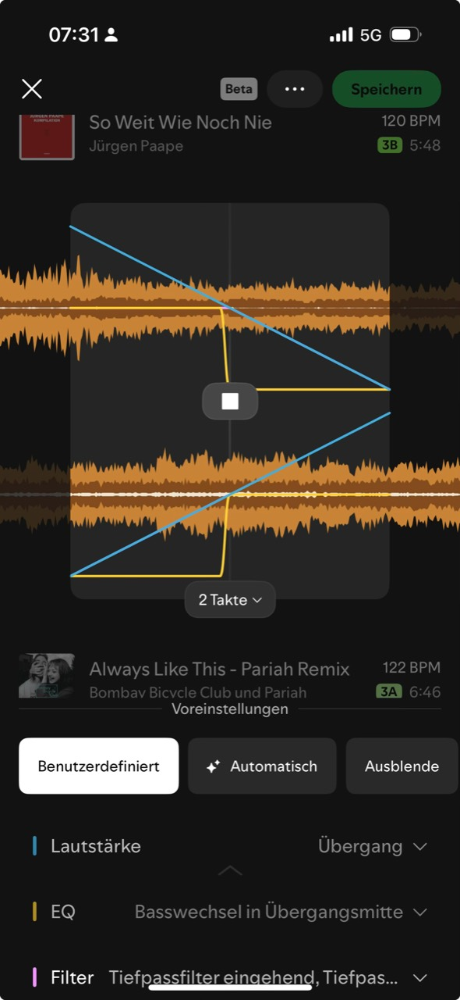

Erst passend, dann spannend
Du lernst, den Spotify-Mix-Screen als Entscheidungssystem zu lesen: Tempo, Tonart, Phrase und Bass. Danach kannst du den Screenshot schon sinnvoll beurteilen.

Das Grundmodell
Spotify sagt selbst: Beim Mixen helfen BPM, Camelot-Key, Waveform und Beatdaten; man kann Auto nutzen oder Lautstaerke, EQ und Effekte selbst formen. Quelle: Spotify Newsroom.
Fuer dich heisst das: Ein Uebergang klingt elegant, wenn genug Dinge verbunden sind. Er klingt ueberraschend, wenn ein Ding bricht, aber mindestens ein anderes Ding die Bruecke baut.
Dein Screenshot in vier Lesarten
Tempo
120 BPM zu 122 BPM ist nah. Das ist gut fuer einen Blend, weil der Puls nicht sofort auseinanderfaellt.
Tonart
3B zu 3A ist gleiche Zahl, anderer Letter. Auf dem Camelot-System ist das eine sichere, subtile Major/Minor-Beziehung. Quelle: Mixed In Key.
Phrase
2 Takte ist kurz. Das kann elegant sein, wenn wenig melodisches Material ueberlappt, wirkt aber weniger wie ein langer DJ-Blend.
Bass
Die gelbe EQ-Kurve zeigt einen Basswechsel in der Mitte. Das ist wichtig, weil zwei Basslines gleichzeitig schnell matschig werden. Quelle: Digital DJ Tips.
Mini-Trainer: Welche Bruecke traegt?
Waehle fuer jeden Fall die staerkste Bruecke. Danach bekommst du sofort Feedback. Es geht nicht um richtig auswendig, sondern um Hoerentscheidungen.
Fall A: 120 BPM / 122 BPM, 3B / 3A, 2 Takte
Fall B: Techno in Indie, 128 BPM / 104 BPM, Tonart unklar
Fall C: Gleiches Tempo, aber Vocals und Akkorde reiben
Spotify-Regel fuer diese Woche
Wenn du einen Uebergang ausprobierst, veraendere erst nur einen Hebel: Taktlaenge, Basswechsel oder Filter. Hoere dann A/B: Wurde der Wechsel unsichtbarer, klarer oder interessanter?
Fuer die naechste Wiederholung liegt die Kurzreferenz hier: Mix-Entscheidungskarte.
Primaere Quelle zum Lesen: Spotify Newsroom: Mix Your Favorite Playlists Seamlessly. Wenn dir eine Option aus Spotify unklar bleibt, frag mich direkt mit Screenshot oder Trackpaar.